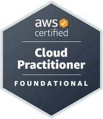
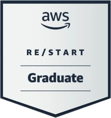

Aeropuerto · Infra & CI/CD
Infraestructura y pipelines del sistema Aeropuerto: backend Spring Boot y frontend React desplegados en AWS ECS Fargate.
AWS ECSDockerGitHub Actions
GitHubBarcelona
DevOps Engineer en OCA Global. Automatizo despliegues y opero infraestructura en AWS y Azure con Ansible, Jenkins, Docker y Kubernetes. Vengo de administrar sistemas Windows, Linux y VMware, y estudio Ingeniería Informática en la UOC.
Sobre mí
Soy DevOps Engineer en OCA Global, donde automatizo despliegues y gestiono infraestructura con Ansible, Jenkins, GitHub, Zabbix y Azure. Antes administré entornos virtualizados con VMware y servidores Linux y Windows, y trabajé con AWS, Docker y Kubernetes.
Ahora mismo preparo la AWS Solutions Architect Associate y estudio Ingeniería Informática en la UOC.
Automatizo despliegues y opero infraestructura en la nube para que los equipos entreguen con confianza.
Skills
Pasa el cursor o toca un elemento para ver su descripción.
+en uso ~en entrenamiento
Experiencia
v3.0HEAD → main
v2.0
v1.0
Grado en Ingeniería Informática · 2026 – actualidad
Especialización en Desarrollo de Aplicaciones Multiplataforma (DAM) y DevOps Tools · 2024 – 2025
Técnico Superior en Sistemas Informáticos en Red · 2019 – 2021
Logros


Proyectos
Infraestructura y pipelines del sistema Aeropuerto: backend Spring Boot y frontend React desplegados en AWS ECS Fargate.
Pipeline en Python que valida cada commit con tests automáticos (shift-left testing).
API con FastAPI: CRUD, filtros y Swagger, tests en CI y lista para contenedor.
Monitorización de salud offline para astronautas Artemis, hecha en equipo en 48 horas: constantes en tiempo real, NEWS2 automático y un test GO / NO-GO antes de cada tarea crítica.
Pipeline diario que genera un post DevOps con IA (Amazon Bedrock) y lo publica en GitHub Pages con Quarto y GitHub Actions.
Linux, redes, Windows Server, AD, virtualización, Git
AWS / Azure, Docker, Terraform, CI/CD
Kubernetes, Helm, observabilidad, costes, alta disponibilidad
Landing zones, redes híbridas, Well-Architected
Contacto
¿Buscas a alguien para tu equipo de sistemas o cloud? Escríbeme.
Último reto: sal de vim.
✓
Hay gente que lleva años intentándolo.
Talk is cheap. Show me the code.— Linus Torvalds
Si puedes imaginarlo, puedes programarlo.
▶ Programación ATS